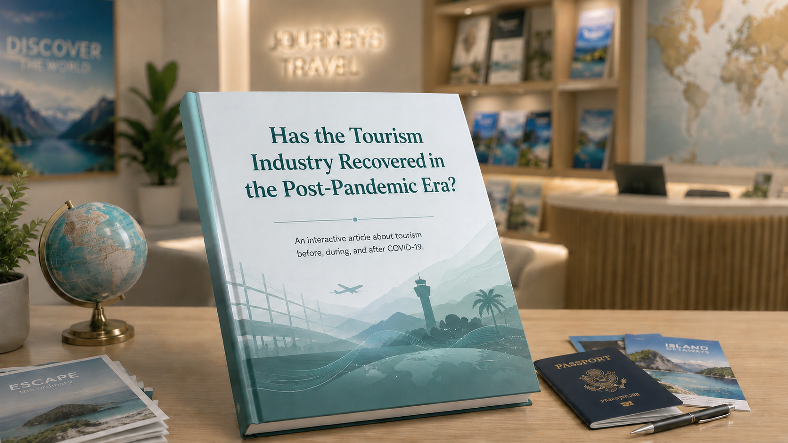
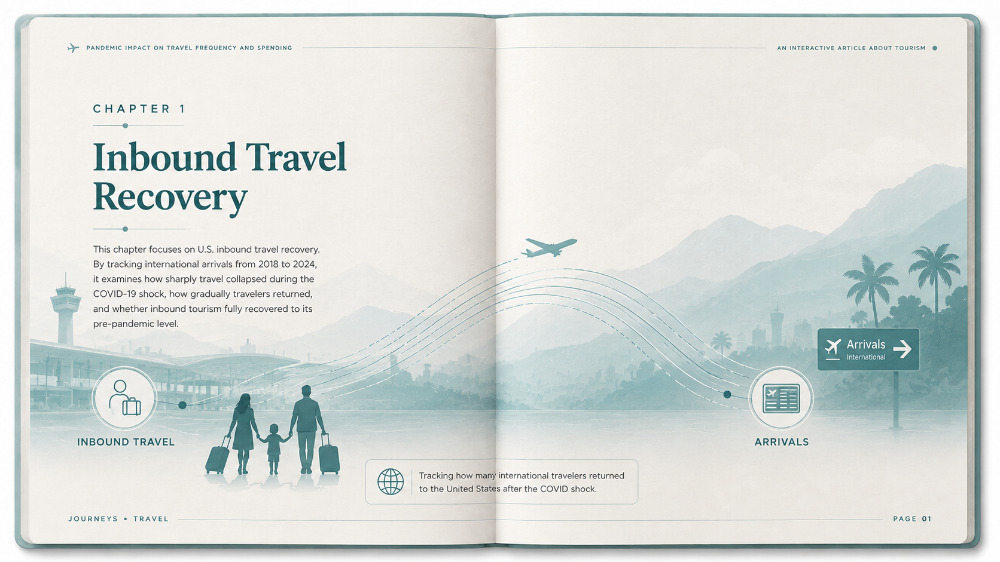
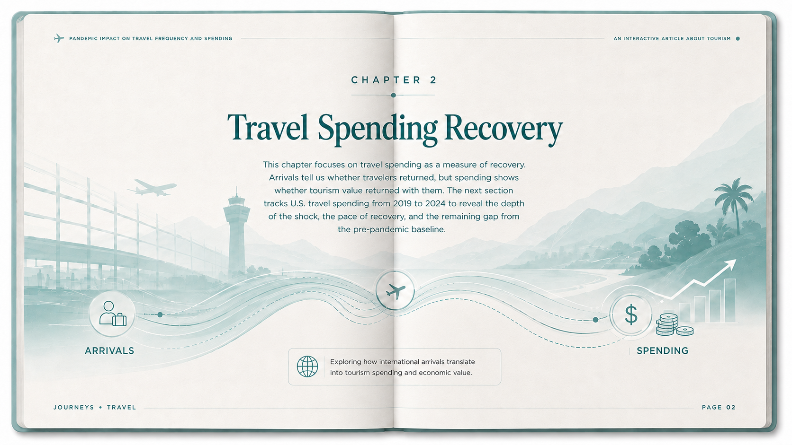

Tourism Through the PandemicIMT 561 Data Visualization: Design and Development

Before 2020, global travel never stopped.

Worldwide Inbound Tourism, 2018-2024
This section will introduce the world map and explain how to read the yearly recovery pattern.
Use the slider to compare inbound tourist arrivals before, during, and after the pandemic.
Countries without available data remain gray.
U.S. Inbound Travelers, 2018-2024
This section focuses on arrivals into the United States. Use the year slider to see how
inbound travel declined during the pandemic and recovered afterward.

U.S. Travel Spending, 2019-2024
Arrivals show whether people came back. Spending shows whether the tourism economy recovered with them.
Total U.S. travel spending dropped sharply in 2020, then climbed through the recovery years.
The chart compares each year against the 2019 pre-pandemic baseline to show both the shock and the remaining gap.
Visitor volume and tourism receipts did not recover at the same pace everywhere.
This chart compares each destination against its 2019 baseline: horizontal position shows
arrival recovery, vertical position shows tourism receipts recovery, and bubble size shows
2024 arrival scale.
Years are shown as discrete snapshots because the dataset only includes 2019, 2021, and 2024.
Official 2024 values are used where available; remaining countries are retained as prototype estimates.
Hawaii and Cancun are both leisure destinations people choose for holidays, but they carry
different spending expectations. Comparing arrivals, hotel occupancy, and real spending per visitor
shows how destination-level recovery can look similar in volume but different in traveler value.
Data: Hawaii and Cancun destination dataset.
Destination Snapshot
Hawaii and Cancun, 2018-2024
Similar leisure trips recovered with different spending patterns.
Hawaii
Cancun
Spend
About the Authors
Author One
Brief bio or affiliation. Describe your background, research interests, or role in this project.
Author Two
Brief bio or affiliation. Describe your background, research interests, or role in this project.